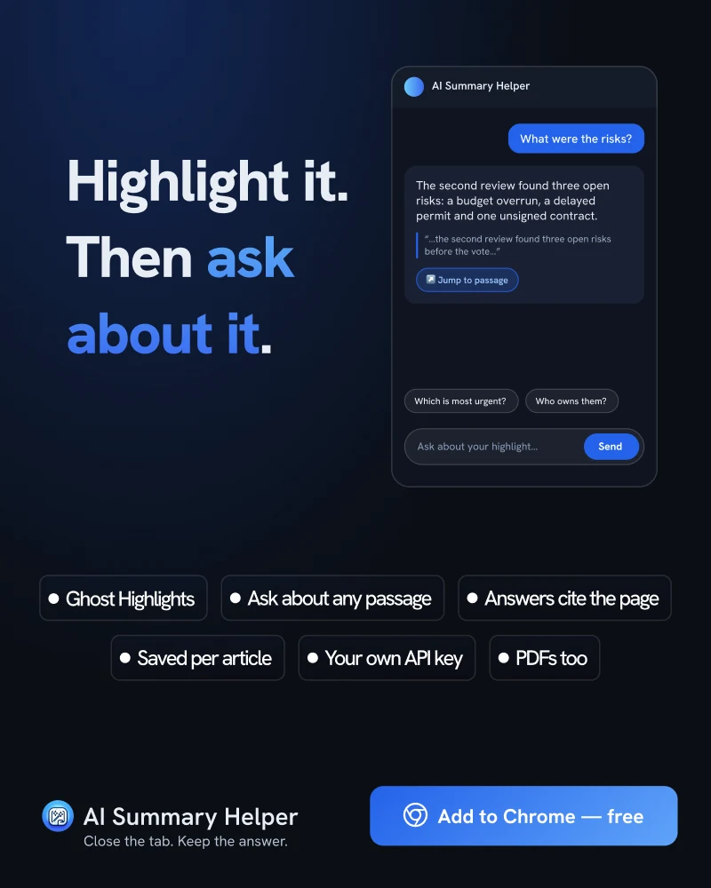

Tek Başına Vurgulamak Neredeyse İşe Yaramaz. Bunun Yerine Soru Sorun.
Vurgulamak ders çalışıyormuşsunuz hissi verir. Ancak araştırmalar çoğunlukla öyle olmadığını gösteriyor. Çözüm basit: Sadece vurgulamakla kalmayın, üzerine sorular sorun.
2013 yılında Dunlosky ve meslektaşları şu dergide bir derleme yayımladı: Psychological Science in the Public Interest Bu çalışma, popüler on öğrenme tekniğini ne kadar faydalı olduklarına dair kanıt düzeyine göre derecelendirdi. Metin vurgulama ve altını çizme, tekrar okuma ile birlikte en düşük fayda grubunda yer aldı. Pratik testleri ve çalışmayı zamana yayma (aralıklı tekrar) ise zirveye yerleşti.
Rahatsız edici olan vurgulamanın faydasız olması değil; gerçek bir çalışma hissi vermesidir. Okursunuz, önemli cümleyi bulup işaretlersiniz ve sayfa sarıya boyanır. Bir eylem gerçekleşmiştir, öyleyse işe yaramış olmalıdır.
Vurgulama neden zayıf bir hafıza izi bırakır?
Vurgulama yalnızca şunu bir cümleyi önemli bulduğunuzu kaydeder. Onunla ilgili bir şey yapmanızı sağlamaz. Bir pasajı anlamadan da işaretleyebilirsiniz ya da ilk okuyuşta üzerinde hiç düşünmeden ikinci turda vurgulayabilirsiniz. İncelemenin vardığı nokta şudur: Materyale sizi yalnızca tekrar maruz bırakan teknikler, ondan yeni bir şey üretmenizi sağlayan tekniklerin gerisinde kalır.
Sorular, bir şeyler üretmenin en pratik yoludur
Aynı derleme, bir sorgulama tekniği olan açıklayıcı sorgulamayı (elaborative interrogation) orta derecede faydalı olarak nitelendirdi: Belirtilen bir gerçeğin neden doğru olduğunu kendinize sormak. Bunun için bir teste ihtiyacınız yok. Kendi cümlelerinizle kısa bir açıklama yapmanızı sağlayan bir tetikleyici yeterlidir.
Doğru noktaya yöneltildiğinde bir takip sorusunun yaptığı tam olarak budur. Belirli bir pasaj hakkında sorulan “Riskler nelerdi?” sorusu neyi öğrenmek istediğinize karar vermenizi sağlar ve yanıt, beklentinizle karşılaştırabileceğiniz somut bir bilgi sunar.
Vurgulayın, ardından sorun
AI Summary Helper'da vurgulama sadece ilk adımdır. Bir pasajı seçtiğinizde sayfada kalır, böylece makaleye geri döndüğünüzde yine oradadır. Ardından bu pasaj hakkında bir takip sorusu sorun. Yanıt sayfadan alıntı yapar ve alıntıya tıkladığınızda sizi doğrudan ilgili paragrafa götürür; böylece modelin metni sizinle aynı şekilde anlayıp anlamadığını kontrol edebilirsiniz. Vurgular ve sohbetler makale bazında saklanır, yani bir sonraki ziyaretinizde kaldığınız yerden devam edersiniz.

İki dakikalık bir rutin
- En fazla üç pasaj vurgulayın. Her yer sarıysa hiçbir yer belirgin değildir.
- Her vurgu için bir soru sorun. “Bu neden önemli?” veya “Bu yanlış olsaydı ne değişirdi?” soruları yeterlidir.
- Yanıtı okumadan önce kendi cevabınızı sesli olarak veya tek bir cümleyle ifade edin. Öğrenme tam olarak bu karşılaştırmada gerçekleşir.
Bunların hiçbiri vurgulamayı yanlış kılmaz; onu yalnızca bir başlangıç noktası yapar. İşaretleyici pasajı bulur; soru ise hatırlamayı sağlar.
AI Summary Helper, ücretsiz bir Chrome uzantısıdır.
Chrome'a ekle